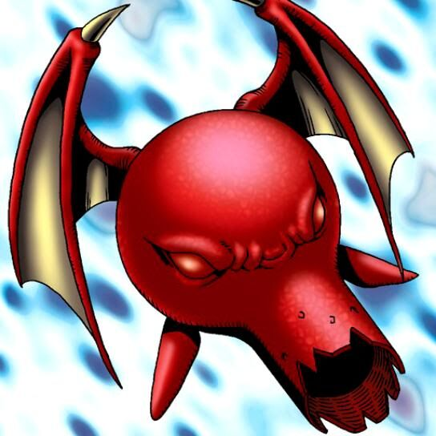

Tyhone #2

STATS
ATK: 1700
DEF: 1900DECK COST
Deck Cost per Card: 36Fusion List (5 Possible Fusions)
- Tyhone #2 + Blackland Fire Dragon = Red-Eyes B. Dragon
- Tyhone #2 + Koumori Dragon = Red-Eyes B. Dragon
- Tyhone #2 + Ryu-Kishin = Whiptail Crow
- Tyhone #2 + Tripwire Beast = Twin-Headed Thunder Dragon
- Tyhone #2 + Darkfire Dragon = Red-Eyes B. Dragon